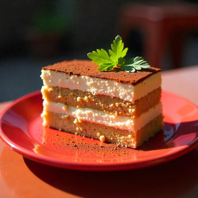

Tiramisu

O Tiramisu é uma clássica sobremesa italiana, conhecida por suas camadas de biscoitos embebidos em café, intercaladas com um creme suave de mascarpone, e finalizada com uma cobertura generosa de cacau em pó. Este doce elegante é perfeito para ocasiões especiais, com seu sabor equilibrado e textura leve.
Ingredientes:
- 300g de biscoitos de champagne (ladyfingers)
- 400g de queijo mascarpone
- 4 ovos (separe gemas e claras)
- 1 xícara de açúcar
- 1 xícara de café forte (frio)
- 1 colher de sopa de cacau em pó para polvilhar
- 1/4 de xícara de licor de café (opcional)
- Chocolate ralado para decorar (opcional)
Modo de Preparo:
- Em uma tigela, bata as gemas com o açúcar até obter uma mistura clara e cremosa.
- Adicione o queijo mascarpone às gemas batidas e misture até formar um creme homogêneo.
- Em outra tigela, bata as claras em neve até formarem picos firmes e incorpore delicadamente ao creme de mascarpone.
- Misture o café com o licor de café, se estiver usando.
- Molhe os biscoitos rapidamente no café, um de cada vez, e disponha uma camada deles no fundo de uma travessa.
- Cubra os biscoitos com metade do creme de mascarpone.
- Repita o processo, fazendo mais uma camada de biscoitos e finalizando com o restante do creme de mascarpone.
- Polvilhe o cacau em pó por cima com a ajuda de uma peneira.
- Leve à geladeira por, no mínimo, 4 horas antes de servir.
- Decore com chocolate ralado, se desejar, e sirva gelado.
Bolo de Morango

O bolo de morango é uma sobremesa clássica, perfeita para qualquer ocasião. Com camadas de bolo fofinho, coberto com um creme leve e morangos frescos, é uma verdadeira explosão de sabor que encanta a todos!
Ingredientes:
- 3 xícaras de farinha de trigo
- 2 xícaras de açúcar
- 1 xícara de manteiga (em temperatura ambiente)
- 4 ovos
- 1 xícara de leite
- 1 colher de sopa de fermento em pó
- 1 colher de chá de essência de baunilha
- 2 xícaras de morangos frescos (cortados ao meio)
- 1 xícara de creme de leite para o recheio
- 2 colheres de sopa de açúcar para o creme
- Morango extra para decorar
Modo de Preparo:
- Preaqueça o forno a 180°C. Unte e enfarinhe duas formas redondas de 23 cm.
- Em uma tigela, bata a manteiga com o açúcar até obter uma mistura clara e fofa.
- Adicione os ovos um a um, batendo bem após cada adição. Misture a essência de baunilha.
- Em outra tigela, misture a farinha com o fermento.
- Alternadamente, adicione a mistura de farinha e o leite à mistura de manteiga, começando e terminando com a farinha. Misture até ficar homogêneo.
- Divida a massa entre as formas preparadas e asse por cerca de 25-30 minutos ou até que um palito inserido no centro saia limpo.
- Deixe esfriar nas formas por 10 minutos antes de desenformar e transferir para uma grade para esfriar completamente.
- Enquanto isso, bata o creme de leite com o açúcar até obter picos firmes.
- Quando os bolos estiverem frios, coloque uma camada em um prato, cubra com metade do creme de leite e espalhe os morangos por cima.
- Coloque a segunda camada de bolo e cubra com o restante do creme de leite. Decore com morangos frescos.
- Sirva gelado ou em temperatura ambiente.